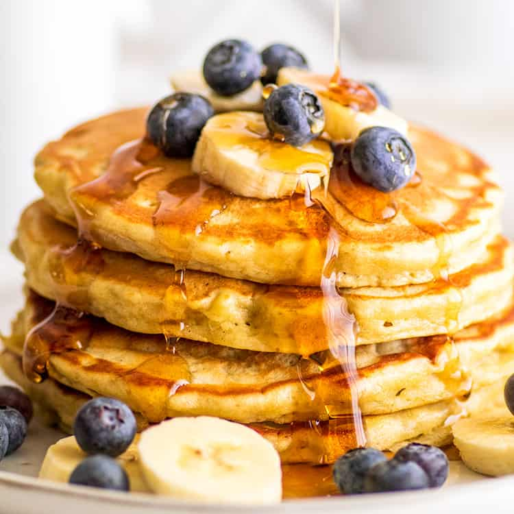

Banana pancakes

Nutrition Facts (per serving):
193 Calories, 7g Fat,
29g Carbs, 5g Protein.
Ingredients
- 1 cup all-purpose flour
- 1 tablespoon white sugar
- 2 teaspoons baking powder
- ¼ teaspoon salt
- 1 egg, beaten
- 1 cup milk
- 2 tablespoons vegetable oil
- 2 ripe bananas, mashed
Steps
-
Combine flour, white sugar, baking powder, and salt in a bowl. Mix
together egg, milk, vegetable oil, and bananas in a second bowl.
-
Stir flour mixture into banana mixture; batter will be slightly lumpy.
-
Heat a lightly oiled griddle or frying pan over medium high heat. Pour
or scoop the batter onto the griddle, using approximately 1/4 cup for
each pancake.
-
Cook until pancakes are golden brown, 3 to 5 minutes per side. Serve
hot.
-
Serve your banana pancakes immediately. They're delicious alone or with
your favorite pancake toppings.